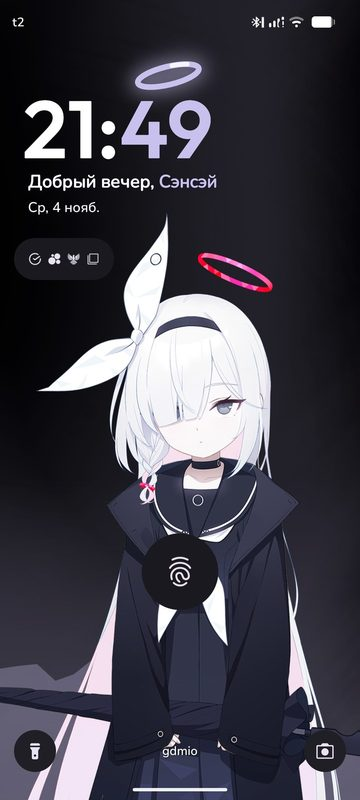
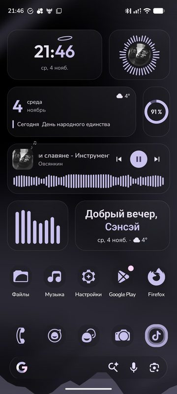
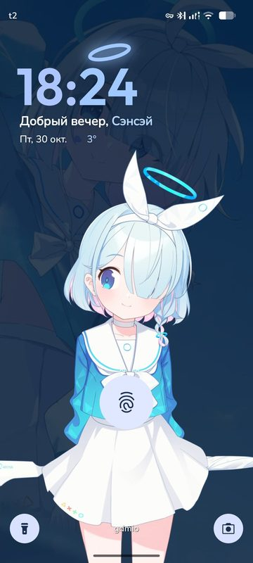
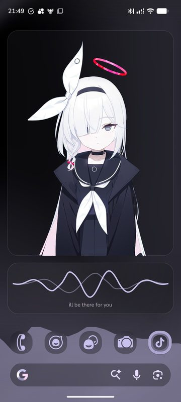
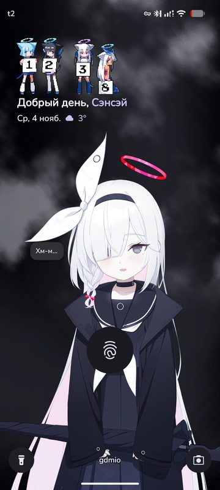
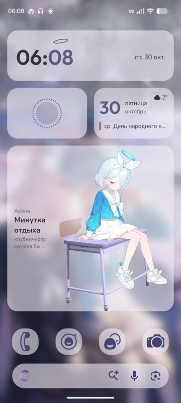
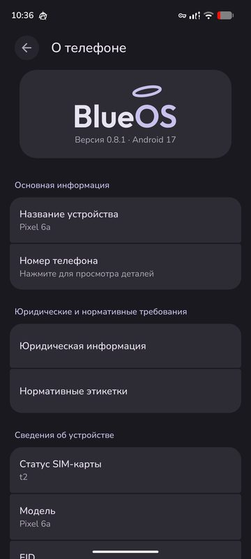

BlueOS — Фанатская прошивка для Android в стиле Blue Archive
Фанатская прошивка для Android в стиле Blue Archive
Основана на LineageOS 24.0 (Android 17), Google Play встроен. Бесплатно, исходники открыты. Автор — GDmio.
Что в ней есть
- Свой логотип, анимация загрузки, шрифты и звуки
- Живой нимб над часами на экране блокировки, пиксельные часы Moe
- Живые виджеты в одном стиле, с эквалайзером музыки
- «Цвета»: каждая деталь берёт цвет из обоев по своей роли
- Живая погода и эквалайзер прямо на обоях
- Арона или Плана живут на экране блокировки и в виджете: отвечают на касания, движение телефона и уведомления*
Телефоны
- Google Pixel 6a (bluejay)основной телефон
- Google Pixel 6 (oriole)проверили тестеры
- Google Pixel 6 Pro (raven)проверили тестеры
- Samsung Galaxy S20 FE на Snapdragon (r8q)проверили тестеры
- Другие телефоны: GSI на TrebleDroidэкспериментально
Как установить: INSTALL.ru.md. Собрать самому: BUILDING.ru.md.
Скриншоты







* Персонажа и обоев в прошивке нет.
Файлы игры
В BlueOS нет файлов игры: ни моделей персонажей, ни голосов, ни музыки и обоев из игры. Прошивка полностью работает без них. Свои файлы можно добавить прямо на телефоне («Обои и стиль» → «Персонаж» → «Файлы персонажа»). Где их взять: ссылка в описании TikTok-профиля автора, tiktok.com/@chozadaun.
Вопросы
Это BlueOS от vivo или от Blue Robotics?
Нет. Эта BlueOS — фанатская прошивка для Android от GDmio, вдохновлённая игрой Blue Archive. С теми проектами у неё только общее название.
Это официальная прошивка Blue Archive?
Нет. Это неофициальный фанатский проект, он не связан с Nexon, Yostar и NEXON Games.
Google Play есть?
Да, сервисы Google (MindTheGapps) встроены.
Это бесплатно?
Да. Прошивка и исходники бесплатны, лицензия — в репозитории.
Где новости и новые версии?
В Telegram-канале t.me/BlueOSfirmware и на странице релизов.
⚠️ Без гарантий. Установка любой кастомной прошивки стирает телефон и требует разблокированного загрузчика. Часть приложений может не работать (оплата телефоном, некоторые банки).